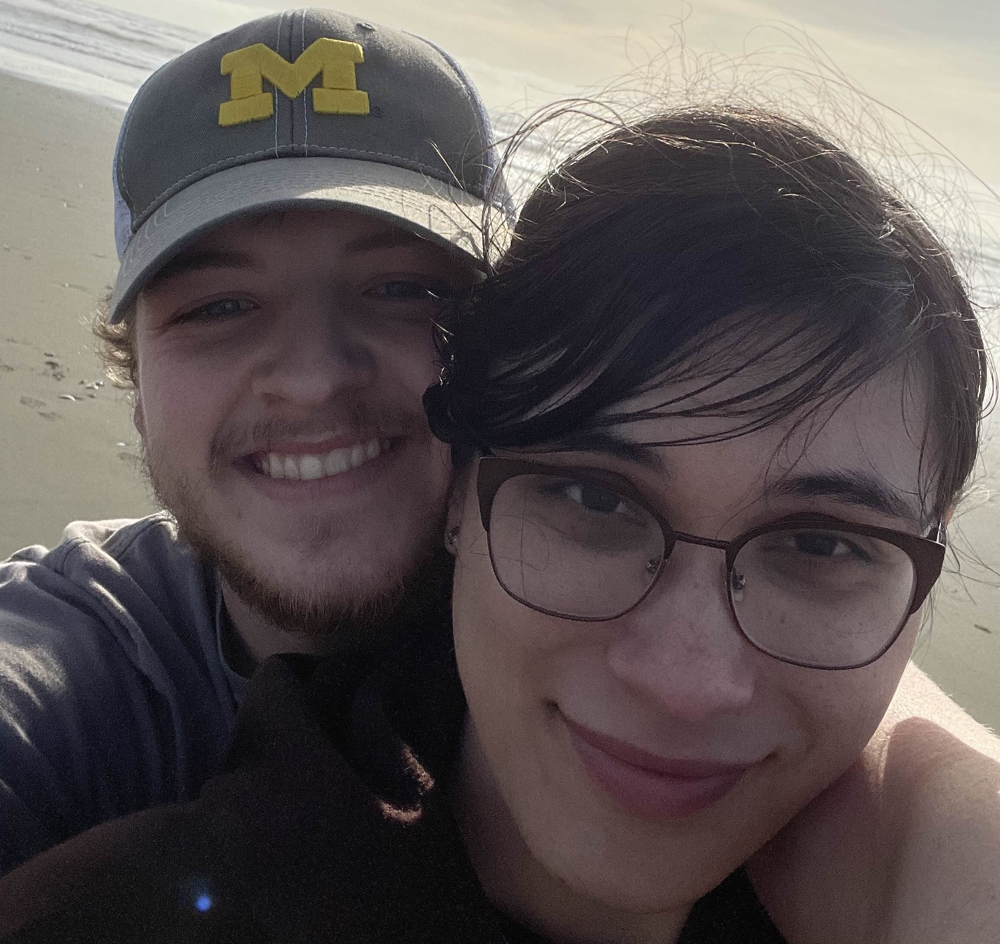

 Hi, I'm Natalie or noodlx in online circles (pronounced noodle), a passionate Junior Developer and a recent graduate from Cal Poly Humboldt (May 2024); I live surrounded by the lovely redwood forest in Humboldt California with my boyfriend Kodiak and our distinguished and respectable feline companion, Bartholomew. I currently work as an independent tech consultant for small businesses, but seek to expand my skillset through collaboration! So a little about me: my journey into the tech world began early—I was just four years old when I first started programming with Lego Mindstorms. By the time I was ten, I was creating gameplay mods for Warcraft III and Roblox, sharing them with friends, and diving deep into the world of coding. This early fascination led me to pursue programming rigorously, from my high school years, where I excelled in AP Computer Science, to earning my Bachelor's degree at Cal Poly. Welcome to my tech blog and portfolio, where I’ll be sharing my journey, projects, and the things I love both in and outside the world of tech.
At Cal Poly, I had the opportunity to work on a variety of projects that honed my skills in both front-end and back-end development, as well as client interfacing. One of the projects I’m particularly proud of was developing a navigation app for the Cal Poly Humboldt Library, which integrated a 3D environmental model with a dynamic A* pathfinding algorithm to help users navigate the library efficiently. Another was a blockchain solution for tool rentals, showcasing my ability to apply cutting-edge technology to real-world problems. In addition to my academic projects, I programmed alongside the other members of the Computer Science Club and participated in hackathons, where I collaborated with other students to develop innovative solutions to pressing issues.
I’m proficient in a wide range of programming languages and frameworks, including Java, JavaScript (React, Node, Angular), GoLang, C, C++, C#, Python (Django), PL/SQL, Solidity, and HTML. I am sufficient at working in both Windows and Unix environments, and the tools I use to program at home include Visual Code, Oracle DBMS, and GitHub's Co-pilot, which helps me streamline my workflow. I pride myself on my ability to learn new technologies quickly and adapt to new environments, which has been crucial in my academic and professional journey.
It’s the desire to make life easier for others through technology. I thrive on solving problems and optimizing processes, whether it’s finding the fastest route home or developing tools that save time and effort for my clients. This drive has led me to take on freelance projects, as an independent technology consultant I worked alongside Hummingbird Solar Solutions automate their client acquisition process, reducing their acquisition workload by over 90%.
I’m eager to join a dynamic team as a Junior Developer, where I can learn from seasoned professionals and continue to grow my skills. I’m excited about the future of technology, especially how it intersects with other fields like medicine, economics, and social sciences. I want to be at the forefront of this ever-evolving landscape, contributing to projects that make a real impact.
I’m an avid outdoor enthusiast, which was one of the reasons I chose to study at Humboldt. I’ve also been a long-time fan of video games—Super Smash Bros. Melee being a particular favorite—anime, movies, and tabletop roleplaying games. These hobbies not only keep me grounded but also inspire my work as a developer. Whether it’s mapping out hiking trails or exploring open-source mods for my favorite games, I’m always looking for ways to blend my personal interests with my professional skills.